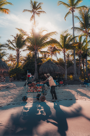

Capital
Santo Domingo
República Dominicana

The Dominican Republic shares the island of Hispaniola with Haiti and is the most visited destination in the Caribbean. Beyond its beaches, the country is home to colonial-era Santo Domingo, the merengue and bachata that fill its streets, and mountain towns tucked into the Cordillera Central.
Two stones found almost nowhere else on Earth capture the country's character: larimar, a blue-green volcanic stone mined only in the southwest, and amber, golden fossilized resin pulled from the northern hills. Their colors run through this page.
Santo Domingo
Warm, humid, and breezy year-round — true wind chill rarely applies at sea level here.
Capital
Santo Domingo
Language
Spanish
Currency
Dominican Peso (DOP)